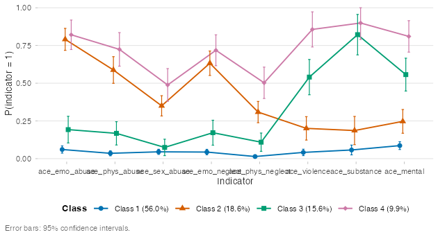
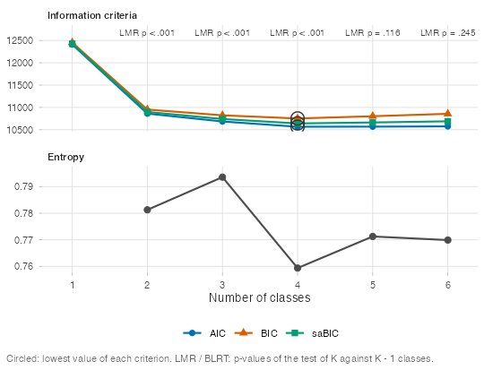
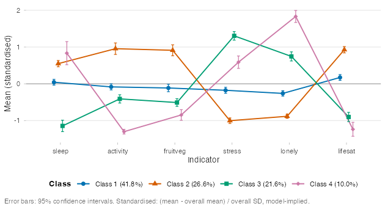
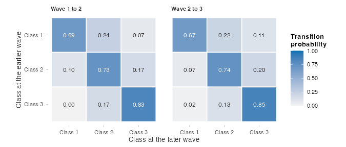
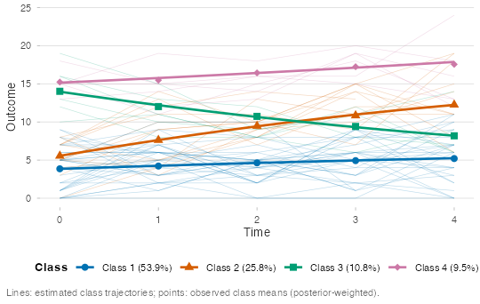

A tidy R interface to the Julia package LatentMixtures.jl: latent class analysis (LCA), latent profile analysis (LPA), latent transition analysis (LTA), multigroup models with full, partial or no measurement invariance, two-level (multilevel) latent class and profile models with cluster-level latent classes, and latent class growth / growth mixture models (including parallel processes). It supports FIML for missing data, sampling weights, one-step covariates, three-step auxiliary models (R3STEP, BCH, DCAT), robust (MLR) standard errors, and the VLMR/LMR and bootstrap likelihood-ratio tests. Random starts run on several threads. Results agree with Mplus on the validation cases in tests/.
You write R: data frames, pipes and tidyselect column choice. The estimation runs in one persistent Julia process.
Installation
-
Julia (>= 1.12), for example with juliaup:
JuliaConnectoR must be able to find
julia. If it is not on thePATH, setJULIA_BINDIR(e.g. in~/.Renviron:JULIA_BINDIR=~/.juliaup/bin). -
R packages:
install.packages(c("JuliaConnectoR", "rlang", "tidyselect", "remotes")) # the repository is private: set a GitHub token first, e.g. Sys.setenv(GITHUB_PAT = "...") remotes::install_github("williamlorder/latentmixtures") # or from a local checkout install.packages("path/to/latentmixtures", repos = NULL, type = "source") -
Julia packages: install LatentMixtures.jl into the default Julia environment, from GitHub (default) or from a local copy (development mode):
latentmixtures::install_julia_packages() # Pkg.add(url = "https://github.com/williamlorder/LatentMixtures.jl") # or: install_julia_packages(path = "path/to/LatentMixtures.jl")The repositories are private: you need read access, and Git must be able to authenticate to github.com (for example
gh auth loginfollowed bygh auth setup-git, or a personal access token in your Git credential helper).
Documentation: https://williamlorder.github.io/software/latentmixtures/.
Quick start
The package ships five simulated datasets with known generating models (?aces, ?wellbeing, ?wellbeing_panel, ?depression, ?substance); every example below runs as is.
library(latentmixtures)
lm_available() # TRUE once Julia and LatentMixtures.jl are installed
lm_start(threads = 4) # optional: starts Julia once; fitting functions auto-start it
# LCA: eight adverse childhood experiences (ace_*) of 1,500 adults. Which patterns of
# childhood adversity are there? (generated with four classes)
data(aces)
m4 <- aces |> lca(starts_with("ace_"), K = 4)
convergence(m4) # check that the best LL is replicated and EM reached the maximum
m4 # header, fit, class sizes, item-response probabilities
summary(m4) # every parameter with robust standard errors
head(classify(m4)) # posterior probabilities and modal class per row
# covariates, known groups, weights: also columns of the data
lca(aces, starts_with("ace_"), K = 4, covariates = c(female, low_parent_edu), weights = weight)
lca(aces, starts_with("ace_"), K = 4, group = female, invariance = "ace_sex_abuse")
# LPA: sleep, activity, diet, stress, loneliness and life satisfaction
data(wellbeing)
lpa(wellbeing, sleep:lifesat, K = 4, variances = "varying")
# mixed indicator types: binary ACE items with an overdispersed symptom count (Mplus COUNT)
mixture(aces, K = 4, categorical = starts_with("ace_"), negbin = depress)
# LTA: alcohol, binge drinking, cigarettes and cannabis in grades 8, 10 and 12
data(substance)
t3 <- lta(substance, waves = list(alc_1:mj_1, alc_2:mj_2, alc_3:mj_3), K = 3)
transitions(t3)
# growth mixtures: depressive (dep1-dep5) and anxiety (anx1-anx5) symptoms, ages 12-16
data(depression)
g <- growth(depression, dep1:dep5, K = 4, model = "gmm", degree = 2)
growth(depression, processes = list(dep1:dep5, anx1:anx5), K = 4, model = "gmm")
# two-level LCA: students in schools, 3 student classes and 2 latent school types
data(schools)
ml <- lca(schools, starts_with("b_"), K = 3, level2 = school, KB = 2)
conditionalprobs(ml) # P(student class | school type)
# three-step auxiliary models: model, data, columns
r3step(m4, aces, c(female, age, low_parent_edu), ref = 1) # who is in which class?
bch(m4, aces, depress) # depressive symptoms by class (generated means 4 to 13)
dcat(m4, aces, srh, ref = 1) # self-rated health by class
# class enumeration tests: 4 against 3 classes
lmr(m4); blrt(m4, reps = 100)
# nested models with the same K (e.g. measurement invariance across sex): naive and
# Satorra-Bentler scaled (MLR) difference tests, as in Mplus
full <- lca(aces, starts_with("ace_"), K = 4, group = female)
part <- lca(aces, starts_with("ace_"), K = 4, group = female, invariance = "ace_sex_abuse")
none <- lca(aces, starts_with("ace_"), K = 4, group = female, invariance = "none")
scaling_factor(full)
compare_models(full, part) # sexual abuse is reported differently by women and men
compare_models(list(full = full, partial = part, none = none)) # each vs. the previous
lm_end() # shut Julia down (lm_start() starts a fresh one)Raw survey or Mplus files often code missing values as -999; convert them before fitting (dat[dat == -999] <- NA).
The older positional form (lca(items_df, 3), r3step(m, covariates_df), bch(m, y_vector)) still works.
Tables
lm_table() formats results for papers in four formats: "text" (console), "markdown" (GitHub), "latex" (booktabs) and "html". It returns the table, and writes it to a file if you give file. In R Markdown and Quarto the table is inserted as it is.
fits <- lapply(1:5, function(k) lca(aces, starts_with("ace_"), K = k))
names(fits) <- paste0(1:5, "-class")
# class enumeration: K, free parameters, LL, AIC, BIC, saBIC, entropy, smallest class,
# plus LMR / BLRT p-values if you pass them (the lowest information criteria are in bold)
lm_table(fits, lmr = lapply(fits, function(m) if (m$info$fit$K > 1) lmr(m)),
blrt = lapply(fits, function(m) if (m$info$fit$K > 1) blrt(m)),
format = "markdown")
lm_table(fits[[3]], fits[[4]], format = "latex", file = "fit.tex", label = "tab:fit")
# parameters: classes side by side ("est (SE)", stars on testable parameters),
# or one row per parameter; confidence intervals instead of SEs
lm_table(fits[[4]], what = "parameters", format = "latex", file = "lca4.tex")
lm_table(fits[[4]], what = "parameters", layout = "long", ci = TRUE, format = "html")
lm_table(fits[[4]], what = "classes") # class sizes, average posterior probabilities
# auxiliary models
lm_table(r3step(fits[[4]], aces, c(age, female)), format = "markdown")
lm_table(bch(fits[[4]], aces, depress), bch(fits[[4]], aces, smoker), pairwise = TRUE)
lm_table(dcat(fits[[4]], aces, srh), format = "html", file = "srh.html")
lm_table(compare_models(full, part), format = "latex")Options: digits, title, notes, stars = c(0.05, 0.01, 0.001) (or FALSE), se, ci, level, layout, kinds, labels.
Extending lm_table()
lm_table() is an S3 generic. A package with its own result class builds an lm_tab (formatted cells, optional panel groups, title, notes) and renders it with lm_render(), which takes care of the four formats:
#' @exportS3Method latentmixtures::lm_table
lm_table.my_result <- function(x, ..., format = c("text", "markdown", "latex", "html"),
digits = 3, file = NULL, title = NULL, notes = NULL, label = NULL) {
body <- data.frame(Class = paste("Class", seq_along(x$est)),
Effect = paste0(lm_format_num(x$est, digits), lm_stars(x$p)),
SE = lm_format_num(x$se, digits), p = lm_format_p(x$p))
tab <- lm_tab(body, title = title %||% "My estimates", notes = notes)
lm_render(tab, match.arg(format), file = file, label = label)
}Plots
Every model and auxiliary result has an autoplot() method (ggplot2), and plot() draws the same figure. The functions return ggplot objects, so titles, scales and themes can be changed with +. The default theme (lm_theme()) and the colour-blind-safe Okabe-Ito palette (lm_palette()) are exported for your own figures.
m <- lca(aces, starts_with("ace_"), K = 4)
autoplot(m, error = "ci") # item-response profiles with 95% CIs
autoplot(m, type = "bars") # stacked category probabilities per class
autoplot(m, type = "classification") # average posterior probabilities by modal class
autoplot(m, type = "posterior") # histograms of the assigned-class posteriors
autoplot(m, type = "sizes") # estimated class proportions and modal counts
# class enumeration: information criteria and entropy against K, LMR / BLRT p-values
lm_fitplot(fits, lmr = lapply(fits, function(m) if (m$info$fit$K > 1) lmr(m)))

p <- lpa(wellbeing, sleep:lifesat, K = 4, variances = "varying")
p_full <- lpa(wellbeing, sleep:lifesat, K = 4, variances = "varying", covariances = "varying")
autoplot(p, standardize = TRUE) # profile means ± 95% CI, in overall-SD units
autoplot(p, error = "sd") # means ± within-profile SD
autoplot(p_full, type = "correlation") # within-profile correlations (covariances != "zero")
t <- lta(substance, waves = list(alc_1:mj_1, alc_2:mj_2, alc_3:mj_3), K = 3)
autoplot(t) # LTA transition matrices, one panel per transition
autoplot(t, type = "prevalence") # class proportions over the waves (geom = "area")
autoplot(t, type = "profile") # item profiles at every wave (non-invariance)
# growth mixtures: estimated class trajectories, observed posterior-weighted class
# means and a sample of individual trajectories (one panel per process)
g <- growth(depression, dep1:dep5, K = 4, model = "gmm", degree = 2)
autoplot(g, data = depression, spaghetti = 60)
Other figures: multigroup models (one panel per group), autoplot(m, type = "regression") for one-step covariates and autoplot(r3step(...)) (odds-ratio forest plots), autoplot(bch(...)) / autoplot(dcat(...)) (class means / probabilities with CIs), autoplot(blrt(...)) (bootstrap distribution of the LR statistic) and autoplot(compare_models(m1, m2, m3)) (dot plot of the fit indices). See ?autoplot.latentmix and the vignettes.
Julia session
-
lm_start(threads = "auto")starts one Julia process, setsJULIA_NUM_THREADSand loads LatentMixtures.jl once. Later calls reuse it. Fitting functions start it automatically, usingJULIA_NUM_THREADSif it is set and"auto"otherwise. -
lm_status()reports whether Julia is running and how many threads it has. -
lm_end()stops the process. Models fitted before still print (their fit statistics are kept in R), but anything that needs Julia asks you to refit them. - You cannot change the number of threads of a running process. To change it, run
lm_end(); lm_start(threads = n). -
lm_session_id()increases with each new Julia process. Packages that load their own Julia code can check it to know when to reload.